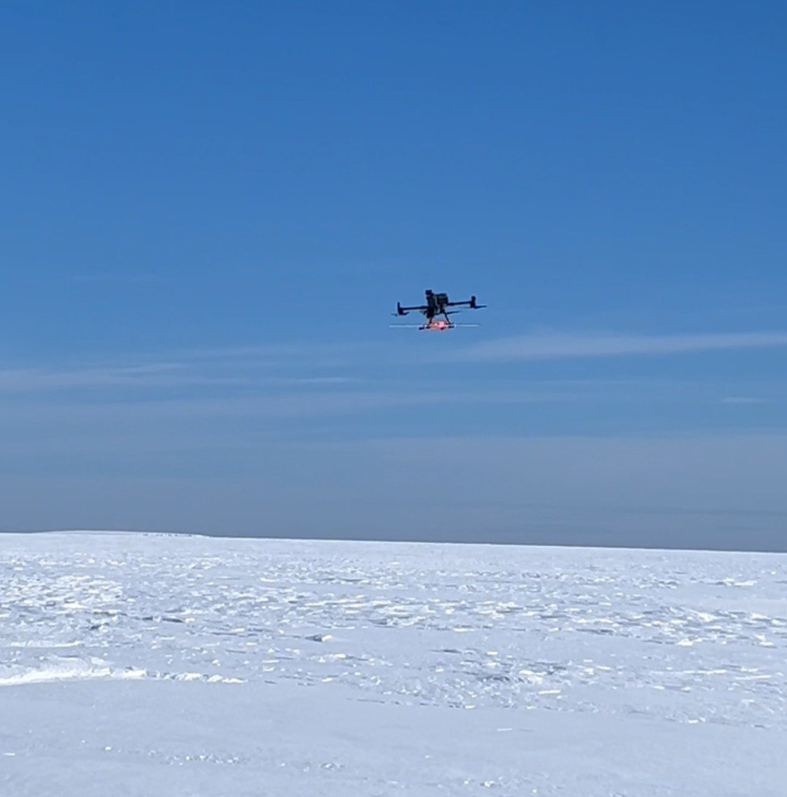
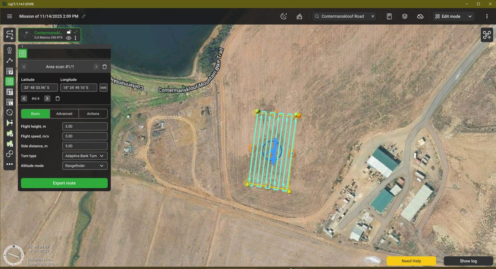
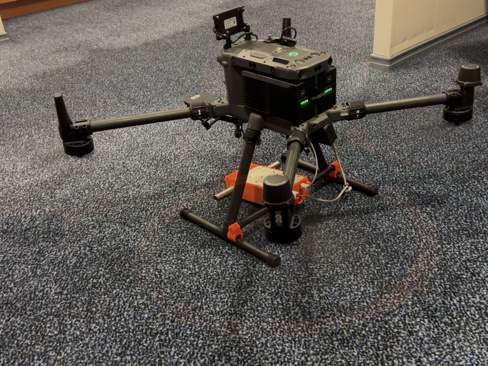

Crevasse detection with drone-borne radar
Pilot in command · Researcher
Drone-mounted ground-penetrating radar surveys on the Fimbul Ice Shelf to detect hidden crevasses. I ran the campaign from equipment checks in Cape Town to flights on the ice.
47.2 line-kmof radar profiles over four survey flights
- Platform
- DJI M350 RTK
- Payload
- Zond Aero GPR
- Lines
- 200 / 25 m
- Height
- 3.3–4.8 m AGL
- UgCS
- True Terrain Following
- DJI D-RTK 2
- ArcGIS
- Python
- EPSG:3031
Context
My MScEng thesis, supervised by Dr Moreblessing Shoko, develops automated detection of hidden crevasses in ground-penetrating radar data. I collected the data myself as a member of the SANAE 65 expedition with the South African National Antarctic Programme.
Preparation · Nov – Dec 2025
- Ran full equipment-readiness checks, and verified the drone and GPR payload were serviced and calibrated to spec, including test-flight data collection.
- Wrote standard operating procedures for drone flight operations, and designed and issued data logbooks to every team to standardise field logging.
- Prepared the GIS data loaded onto Garmin GPS units, so camps were placed clear of hazards and travel routes reached the areas of interest.
- Designed survey lines in Antarctic Polar Stereographic (EPSG:3031), converted them to KML for UgCS, and worked with SPH Engineering on coordinate compatibility and trace-spacing calibration.

On the ice · Jan – Feb 2026
- Managed the project's ArcGIS environment, integrating data from several sources, and produced planning maps to allocate tasks across teams and support other members' thesis research.
- Ran weekly coordination meetings across all teams on progress, logistics and equipment.
- Flew four survey flights between 22 January and 4 February 2026 with a DJI Matrice 350 RTK carrying a Zond Aero GPR (100 and 150 MHz), UgCS SkyHub logging and a radar altimeter, on a D-RTK 2 base station. That gave two wide grids at 200 m line spacing and two tight grids at 25 m, flown with True Terrain Following at 3.3 to 4.8 m above the ice.
- Worked in extreme cold, wind and whiteout risk with very limited outside support.

Processing
- Built a Python pipeline for the radar data: dewow, time-zero correction, background removal, bandpass filtering, gain (SEC/AGC) and time-to-depth conversion.
- Georeferenced every radar trace by joining the SkyHub WGS84 position log to the SEG-Y trace record.
Outcome
47.2 line-km of georeferenced radar profiles across the survey grids. Automated crevasse detection is the subject of my MSc, which is in progress.